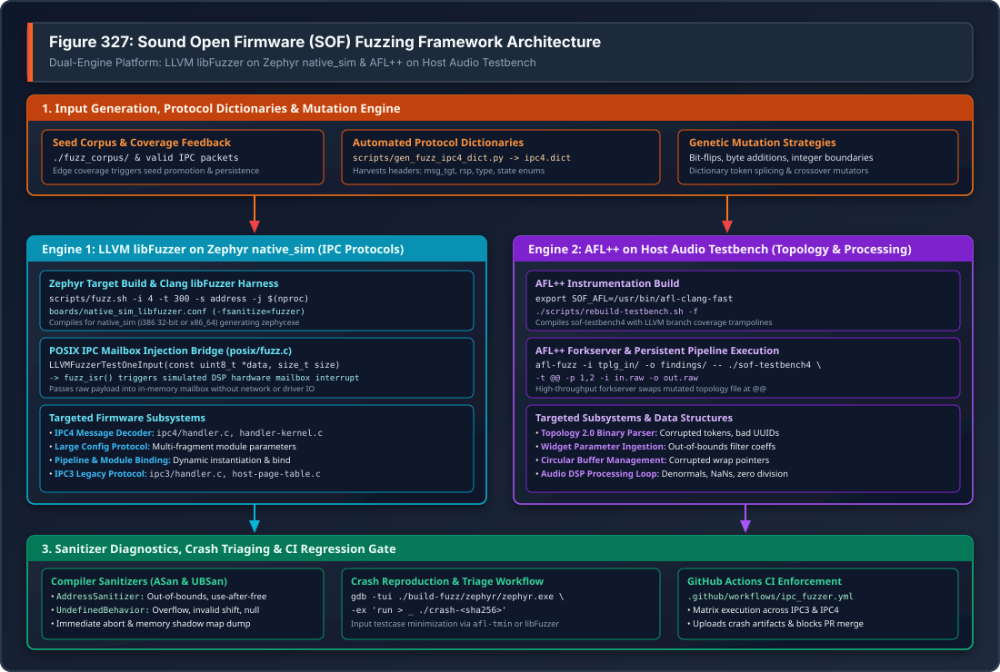
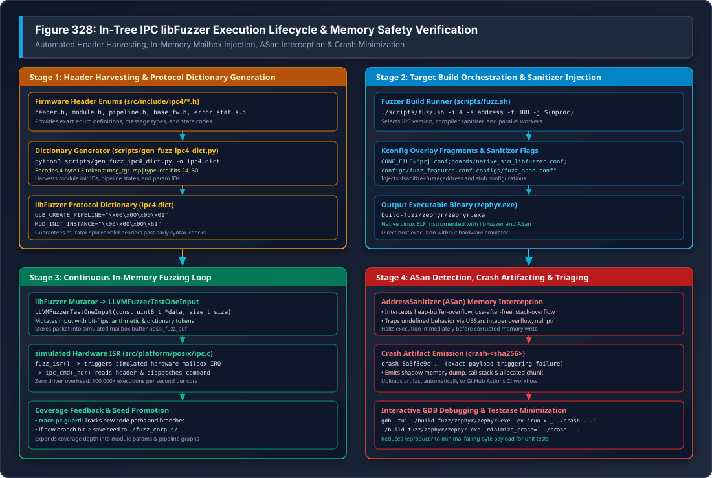

Firmware Fuzzing Architecture & Protocol Security Guide#
Sound Open Firmware (SOF) incorporates automated coverage-guided fuzzing across its firmware architecture to proactively detect memory corruption, protocol parsing vulnerabilities, buffer overflows, and undefined behavior.
Because DSP firmware processes untrusted binary payloads delivered from the
host operating system kernel and user space (including Inter-Processor
Communication mailboxes, dynamic runtime configuration blobs, and ALSA
Topology 2.0 graphs), robust memory safety is critical. SOF deploys a
dual-engine fuzzing framework combining in-tree LLVM libFuzzer on the
Zephyr native_sim target with AFL++ on the host audio pipeline
simulation testbench (Testbench Host Audio Pipeline Simulation).
—
Overview & Threat Modeling in Embedded Audio DSPs#
In modern audio subsystems, the Digital Signal Processor (DSP) acts as an isolated compute coprocessor receiving real-time commands from the host application processor.
Trust Boundaries & Attack Surfaces#
Attack Surface |
Firmware Subsystem & Parser |
Security Risk & Failure Modes |
|---|---|---|
IPC Message Decoders |
|
Malformed headers, invalid message targets, payload length spoofing, out-of-bounds buffer writes. |
Runtime Parameter Blobs |
|
Fragmented multi-packet payload reassembly overflows, corrupted module parameters. |
Topology 2.0 Parsers |
Topology manifest parser, widget graphs |
Malformed token arrays, cyclical pipeline routing, corrupted UUIDs, memory exhaustion. |
Audio DSP Algorithms |
Volume, DRC, EQ, SRC, RTNR inner loops |
Denormal numbers, NaNs, floating-point exceptions, divide-by-zero, unaligned SIMD vector access. |
Memory Safety Challenges in DSP Firmware#
Unlike desktop operating systems equipped with virtual memory paging and Memory Management Units (MMUs), many embedded DSP architectures operate in flat physical memory without fine-grained memory protection. A buffer overflow or corrupted pointer in a single audio processing component can overwrite adjacent ring buffers, corrupt interrupt vector tables, or hang the DSP core, requiring a full system hardware power-cycle.
SOF addresses this challenge by compiling firmware components natively for POSIX user space targets instrumented with AddressSanitizer (ASan) and UndefinedBehaviorSanitizer (UBSan), exposing micro-architectural memory flaws within milliseconds during fuzzing.
—
SOF Fuzzing Framework Architecture#
The SOF fuzzing architecture separates input generation, protocol dictionary synthesis, execution sandboxing, and crash triage into modular tiers.
{kind=link}

Figure 332 Figure 327: Sound Open Firmware (SOF) Fuzzing Framework Architecture#
Architectural Tiers Breakdown#
The framework illustrated in Figure 332 is organized into four operational tiers:
Input Generation, Protocol Dictionaries & Mutation Engine: Maintains a corpus of valid seeds (
./fuzz_corpus/) and uses coverage feedback to promote inputs exploring new execution branches. Automated dictionary generators (scripts/gen_fuzz_ipc4_dict.pyandscripts/gen_fuzz_ipc3_dict.py) harvest protocol enums directly from firmware headers, allowing mutators to splice valid 4-byte message headers and bypass superficial syntax validation.Dual Fuzzing Execution Engines:
Engine 1 (LLVM libFuzzer on Zephyr native_sim): Focuses on the firmware IPC protocol stack. Runs natively as an instrumented POSIX executable (
zephyr.exe). The test harness passes mutated buffers directly to an in-memory simulated hardware mailbox interrupt (fuzz_isr()), executing over 100,000 fuzz iterations per second per CPU core without hardware driver or kernel context switch overhead.Engine 2 (AFL++ on Host Audio Testbench): Focuses on audio pipeline topologies and signal processing routines. Uses AFL++ forkserver snapshots to feed mutated Topology 2.0 binaries and raw PCM audio streams into
sof-testbench4.
Compiler Sanitizers & Runtime Monitors: All fuzzing targets are compiled with Clang sanitizers:
AddressSanitizer (ASan): Instruments all memory allocations with shadow memory, catching out-of-bounds buffer accesses, use-after-free, and stack corruption at the exact instruction of occurrence.
UndefinedBehaviorSanitizer (UBSan): Traps signed integer overflow, invalid bitwise shifts, null pointer dereferences, and division by zero.
Sanitizer Coverage (``trace-pc-guard``): Tracks control flow edges and feeds branch discovery metrics back to the mutator.
Sanitizer Diagnostics, Crash Triaging & CI Enforcement: When a bug is detected, the fuzzer halts immediately, writes a standalone crash reproducer file (
crash-<sha256>), and emits an ASan stack trace. Automated GitHub Actions workflows run continuous fuzzing on pull requests, blocking code merges upon sanitizer failure.
—
Engine 1: In-Tree libFuzzer on Zephyr native_sim#
Engine 1 represents SOF’s primary protocol fuzzer, directly testing firmware IPC message handlers and state machines within an in-memory Zephyr POSIX sandbox.
{kind=link}

Figure 333 Figure 328: In-Tree IPC libFuzzer Execution Lifecycle & Memory Safety Verification#
Lifecycle & Execution Mechanics#
As detailed in Figure 333, the execution lifecycle proceeds through four distinct stages:
Stage 1: Pre-Build Header Harvesting & Dictionary Generation#
Fuzzing highly structured protocols like IPC4 from scratch with random
bit-flips is inefficient because the parser rejects 99.99% of inputs at the
header check. To solve this, SOF uses scripts/gen_fuzz_ipc4_dict.py to
harvest constants directly from src/include/ipc4/*.h:
# Generate IPC4 dictionary from in-tree headers
python3 scripts/gen_fuzz_ipc4_dict.py -o ipc4.dict
The script parses C enum declarations and encodes 4-byte little-endian tokens:
Global Primary Message Headers (
global_pri): Encodes message type into bits 24..28 withmsg_tgt=0andrsp=0(e.g.GLB_CREATE_PIPELINE,GLB_DELETE_PIPELINE,GLB_SET_PIPELINE_STATE).Module Primary Message Headers (
module_pri): Encodes module message type withmsg_tgt=1(e.g.MOD_INIT_INSTANCE,MOD_BIND,MOD_SET_LARGE_CONFIG).32-Bit Parameter Identifiers (
u32): Encodes pipeline states, notification types, and large configuration IDs.
Stage 2: Target Build Orchestration & Sanitizer Injection#
The runner script scripts/fuzz.sh builds the firmware application using
Zephyr’s native_sim target (32-bit i386 or 64-bit x86_64) using host Clang:
# Build and fuzz IPC4 for 300 seconds with AddressSanitizer
./scripts/fuzz.sh -i 4 -s address -t 300 -j $(nproc) -d ipc4.dict
Under the hood, fuzz.sh passes specialized Kconfig overlay fragments to
west build:
boards/native_sim_libfuzzer.conf: EnablesCONFIG_LIBFUZZER=yand compiler fuzzer instrumentation flags.configs/fuzz_features.conf: Stubs out hardware peripherals, timers, and external DMA drivers.configs/fuzz_IPC4_features.conf: SelectsCONFIG_IPC_MAJOR_4=yand enables IPC4 message gateway decoders.configs/fuzz_asan.conf: Injects-fsanitize=addressand AddressSanitizer memory limits.
Stage 3: Continuous In-Memory Fuzzing Loop#
Once built, build-fuzz/zephyr/zephyr.exe executes. For every testcase,
libFuzzer invokes the standard entry point defined in
src/platform/posix/fuzz.c:
int LLVMFuzzerTestOneInput(const uint8_t *data, size_t size)
{
// Store fuzzer candidate input into simulated mailbox buffer
posix_fuzz_buf = data;
posix_fuzz_sz = size;
// Trigger the simulated hardware mailbox interrupt in Zephyr POSIX arch
posix_fuzz_case_begin();
posix_fuzz_irq_raise();
// Let Zephyr scheduler run ISR and process IPC command
while (posix_fuzz_case_pending()) {
k_yield();
}
return 0;
}
In src/platform/posix/ipc.c, the simulated interrupt service routine
(fuzz_isr) receives the buffer and dispatches it directly into the firmware
IPC subsystem:
static void fuzz_isr(const void *arg)
{
struct ipc_cmd_hdr *hdr = (struct ipc_cmd_hdr *)posix_fuzz_buf;
// Pass raw fuzzing bytes directly to standard firmware IPC dispatcher
ipc_cmd(hdr);
posix_fuzz_case_abort();
}
This architecture achieves maximum execution velocity because each testcase is processed completely in-memory without inter-process communication, file I/O, or virtualization overhead.
Stage 4: ASan Detection, Crash Artifacting & Debugging#
When an input triggers an out-of-bounds access or assertion failure:
AddressSanitizer halts the process instantly, preventing memory corruption from cascading.
libFuzzer writes the failing payload to a local artifact file named
crash-<sha256>(e.g.crash-8a5f3e9c70b4...).The crash stack trace and shadow memory state are output to stderr.
—
Engine 2: AFL++ on Host Audio Pipeline Testbench#
While Engine 1 targets protocol message parsing, Engine 2 targets audio topology binary parsers, widget lifecycle hooks, and audio DSP processing loops using AFL++ and the host audio pipeline testbench (Testbench Host Audio Pipeline Simulation).
Building the Instrumented Testbench#
The testbench build system supports automated fuzzer compiler injection via
the -f flag in scripts/rebuild-testbench.sh:
# Specify AFL++ compiler wrapper
export SOF_AFL=/usr/bin/afl-clang-fast
# Rebuild testbench with AFL branch coverage instrumentation
./scripts/rebuild-testbench.sh -f
This compiles sof-testbench4 with compile-time edge coverage hooks and an
optimized forkserver.
Fuzzing Topology 2.0 Manifests#
To fuzz the ALSA Topology 2.0 parser, construct a seed corpus containing valid
pre-compiled topology binaries (e.g. from
tools/topology/topology2/development/):
# Create input seed corpus and output findings directory
mkdir -p fuzz_in fuzz_out
cp tools/topology/topology2/development/*.tplg fuzz_in/
# Launch AFL++ fuzzer targeting topology parser
afl-fuzz -i fuzz_in/ -o fuzz_out/ \
-- tools/testbench/build_testbench/install/bin/sof-testbench4 \
-t @@ -p 1,2 -i tools/testbench/test_48k_stereo.raw -o /dev/null
AFL replaces the @@ token with mutated topology binaries. The forkserver
executes the testbench, validating that invalid tokens, negative buffer sizes,
and cyclical pipeline connection graphs are handled gracefully without memory
corruption.
—
Compiler Sanitizers & Configuration Matrix#
SOF uses modular Kconfig fragments under app/configs/ to configure compiler
sanitizers and feature stubs:
Configuration File |
Key Kconfig Options |
Target Focus & Scope |
|---|---|---|
|
|
Enables LLVM libFuzzer runtime on Zephyr |
|
|
AddressSanitizer: heap/stack overflows, use-after-free. |
|
|
UndefinedBehaviorSanitizer: integer overflow, divide-by-zero. |
|
|
Generates branch coverage data for corpus optimization. |
|
|
Disables hardware timers, physical DMA, and DSP IRQ controllers. |
|
|
Compiles IPC4 message handlers and Large Config Set protocols. |
|
|
Compiles legacy IPC3 message handlers and host page table logic. |
—
Continuous Integration & GitHub Actions Enforcement#
SOF enforces continuous fuzzing in GitHub Actions through
.github/workflows/ipc_fuzzer.yml.
Workflow Pipeline Operation#
The automated CI workflow executes on every pull request and scheduled nightly builds:
Environment Provisioning: Provisions an Ubuntu runner and installs the
i386multiarch architecture libraries (libasan8:i386,libubsan1:i386,libc6-dev:i386) alongside Clang and LLVM.Matrix Execution: Spawns parallel jobs across IPC matrix configurations:
Matrix Job 1:
IPC: 3(IPC3 Protocol Fuzzer)Matrix Job 2:
IPC: 4(IPC4 Protocol Fuzzer)
Dynamic Dictionary Harvesting: Executes
gen_fuzz_ipc3_dict.pyandgen_fuzz_ipc4_dict.pyagainst the current PR branch headers to ensure the dictionary reflects any modified enums or added message types.Fuzz Execution: Runs
scripts/fuzz.shfor a minimum of 300 seconds (5 minutes) per matrix job across all available CPU cores.Artifact Upload & PR Gating: If an AddressSanitizer failure occurs, the runner captures the
crash-*reproducer files and stdout logs as CI artifacts and marks the pull request check as FAILED.
—
Crash Triaging, Minimization & Reproduction Runbook#
When the fuzzer encounters a bug, follow this systematic runbook to minimize the testcase, isolate the root cause, and author a regression test.
Step 1: Reproducing the Crash under GDB#
Launch the instrumented Zephyr executable inside GDB, feeding the crash artifact as input:
# Launch GDB with text user interface (TUI)
gdb -tui ./build-fuzz/zephyr/zephyr.exe
# Inside GDB: execute with crash payload
(gdb) run > _ ./crash-8a5f3e9c70b4a1...
# Inspect call stack upon AddressSanitizer SIGABRT
(gdb) backtrace
Step 2: Testcase Minimization#
Fuzzers often produce crash inputs containing hundreds of extraneous bytes unrelated to the failure. Minimize the payload to its smallest reproducible size:
Using libFuzzer:#
./build-fuzz/zephyr/zephyr.exe -minimize_crash=1 -max_total_time=60 \
./crash-8a5f3e9c70b4a1... -exact_artifact_path=minimized_crash.bin
Using AFL++:#
afl-tmin -i findings/crashes/id:000000,... -o minimized_tplg.bin \
-- tools/testbench/build_testbench/install/bin/sof-testbench4 -t @@
Systematic Troubleshooting & Diagnostics#
Error Symptom |
Underlying Root Cause |
Remediation Procedure |
|---|---|---|
|
An IPC parser read or wrote beyond the allocated boundary of a message buffer or parameter struct. |
Inspect the reported byte offset and buffer allocation size in the ASan
report. Enforce bounds checking using |
|
Null pointer dereference in IPC command dispatcher (e.g. accessing an unallocated component or uninitialized pipeline pointer). |
Add explicit null checks on component lookup: |
|
The host system lacks 32-bit AddressSanitizer runtime multiarch
libraries required for the 32-bit |
Install 32-bit multiarch libraries: |
|
A header file under |
Check the enum definition in the source header. Ensure all entries use
explicit integer literals so |
|
Target code entered an infinite loop or wait condition without yielding to the simulated scheduler. |
Set execution timeout per input: |